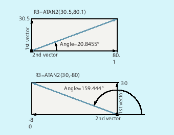

Operator / arithmetic function | Meaning |
| Addition |
| Subtraction |
| Multiplication |
| Division 1) |
| Integer number division 1) |
| Modulo division (supplies the remainder of the integer number division) 1) |
| Chain operator for FRAME variables |
| Sine |
| Cosine |
| Tangent |
| Arc sine |
| Arc cosine |
| Arc tangent2 1) |
| Square root |
| Absolute value |
| |
| Precision correction for comparison errors |
| Round to an integer number |
| |
| Natural logarithm |
| Exponential function |
| Lower value of two variables |
| Higher value of two variables |
| Variable value within the defined value range |
| |
| |
| |
| |
1) See the paragraph, "Examples" | |
The usual mathematical notation is used for arithmetic functions. Priorities for execution are indicated by parentheses. Angles are specified for trigonometry functions and their inverse functions (right angle = 90°).
(type REAL) = type INT or type REAL) / (type INT or type REAL);
Example: 3 / 4 = 0.75
(type INT) = (type INT or REAL) / (type INT or REAL);
Example: 7 DIV 4.1 = 1
(type REAL) = (type INT or REAL) MOD (type INT or REAL);
Example: 7 MOD 4.1 = 2.9
The arithmetic function ATAN2 calculates the angle of the total vector from two mutually perpendicular vectors.
The result is in one of four quadrants (-180° < 0 < +180°).
The angular reference is always based on the 2nd value in the positive direction.
| Program code | Comment |
|---|---|
| R1=R1+1 | ; New R1 = old R1 + 1 |
| R1=R2+R3 R4=R5-R6 R7=R8*R9 | |
| R10=R11/R12 R13=SIN(25.3) | |
| R14=R1*R2+R3 | ; Multiplication or division takes precedence over addition or subtraction. |
| R14=(R1+R2)*R3 | ; Expressions and parentheses are calculated first. |
| R15=SQRT(POT(R1)+POT(R2)) | ; Inner parentheses are resolved first: R15 = square root of ( (R1^2 + R2^2) ) |
| RESFRAME=FRAME1:FRAME2FRAME3=CTRANS(…):CROT(…) | ; FRAME logic operation with chain operator Value assignment at a FRAME component |